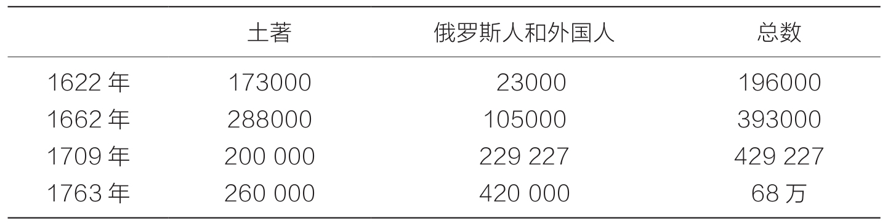

整个17世纪中，毛皮贸易一直支配着西伯利亚。政府是主要的毛皮交易商；实际上，毛皮是政府最重要的岁入来源之一。政府通过各种手段获得毛皮：它向土著收取毛皮形式的贡物即税，并针对最优等的毛皮，向俄国的设陷阱捕兽者和商人征收10％的税；另外，它还保留了购买土著和俄罗斯人所获得的上等毛皮的权利。到1586年，国库每年都能从上述各种来源收到20万张黑貂皮、1万张黑狐皮、50万张松鼠皮以及许多海狸皮和白鼬皮。此外，政府还对毛皮方面的对外贸易实行有利的垄断。现在，关于17世纪中叶从西伯利亚毛皮中得到的岁入的估计数，从占国家总收入的7％到30％不等。有位研究这个问题的最杰出的学者下结论说：“政府从毛皮贸易中支付掉在西伯利亚的行政开支后，保有大量盈余，并使国家增加了一块巨大的地区。”[1]
18世纪，商人和设陷阱捕兽者开始让位于永久的殖民者，他们是为了逃避债权人、兵役、宗教迫害，尤其是农奴制的束缚，从欧洲俄国移居到那里的。16、17世纪在欧洲俄国发展并传播开来的农奴制从未在西伯利亚生根。原因似乎在于，农奴制主要是为了满足国家行使职能所必不可少的那些贵族的需求才发展起来的。但是，贵族并不迁移到西伯利亚，因为西伯利亚不具备可与莫斯科和圣彼得堡相媲美的吸引力。因此，西伯利亚避免了贵族，从而，也避免了农奴制。1763年之前西伯利亚人口增长的情况，可由表24.1中的数字得到说明：
表24.1 1763年之前西伯利亚人口增长情况*

* The Great Siberian Migration: Government and Peasant in Resettlement from Emancipation to the First World War, by Donald W. Treadgold（Copyright © 1957，1985 renewed by Princeton University Press）：part of Table 1, p. 32. Reprinted with permission of Princeton University Press.
十分重要的是，到1763年，生活在西伯利亚的俄罗斯人仅42万，而北美英属13个殖民地的人口那时已上升到150万至200万之间，大约为前者的四倍。换句话说，俄罗斯人先前在进行探险和征服时速度快得多，如今在移居殖民地时速度又慢得多。一个原因在于，西伯利亚只能靠俄国获得移民，而美洲的殖民者却能从欧洲好几个国家得到移民。更为重要的是，美洲对想要成为殖民者的人具有更大的吸引力。西伯利亚的气候条件类似于加拿大。到1914年，加拿大和西伯利亚的人口大致相同——加拿大800万人、西伯利亚900万人——并不是偶然的，而美国，面积小于加拿大或西伯利亚，其人口至1914年却已增长到1亿。
穿越西伯利亚的感想
1908年，俄国一位年轻的外交官乘火车前往驻北京的大使馆，途中穿越了西伯利亚。他的感想展示了作为一个国家和一个阶级分裂社会的西伯利亚。*
我在去北京的途中，不得不穿过整个西伯利亚、中国的东北和华北。穿越西伯利亚的旅行不会不给人留下深刻的印象，尤其是第一次。俄国的幅员之辽阔令人惊叹。你经过一天、经过一星期、经过十天的旅行，依然是在俄国的境内。除乌拉尔山脉和贝加尔湖畔的一列山脉之外，这个国家完全是一片坦途。
当你离开欧洲部分的俄国之后，人口开始变得非常稀少；途中数小时数小时地看不到任何村庄和居民。只是在车站附近有几幢房屋。通常，当火车到站后，当地所有的居民都会跑来，注视着车上的旅客。尤其是在晚上，当灯火把列车照亮时，可以看到车厢内来自上海或远东其他港口的城市居民的优雅身形；这些旅客在当地人眼中简直就像来自另一个星球。这些身穿皮毛服装的外国人会在那些注定要在悲惨的车站度过一生的人们心中激起多少嫉妒和不平啊！我想象一个尚未失去梦想的女孩等在月台上。她听到列车进站的声音，看见装饰豪华的列车徐徐驶入。列车在站内停靠五分钟。旅客们如同来自仙境，跳上月台；他们说笑着、打趣着。又是一声汽笛，列车载着旅客消失了，黑暗、空虚和沉闷又笼罩了站台。
老天真不公平，有些人可以从一个地方到另一个地方，过着奢侈的生活，而另一些人却必须留在被人遗忘的地方，过着悲惨的生活。毫无疑问，这将引起愤怒和不满。我相信，经过西伯利亚的列车在唤醒西伯利亚居民、从而加速革命的到来方面起到了重要的作用。
广漠无垠的空间和荒无人烟的景象开始影响到你，而乘客们则宁愿以用餐、不停地饮茶和打扑克来消磨时间……
* The Memoirs of Dmitrii Ivanovich Abrikossow, MS，1，191-194，as edited and translated by G. A. Lensen. Published with permission of the Archive of Russian and East European History and Culture，Columbia University.